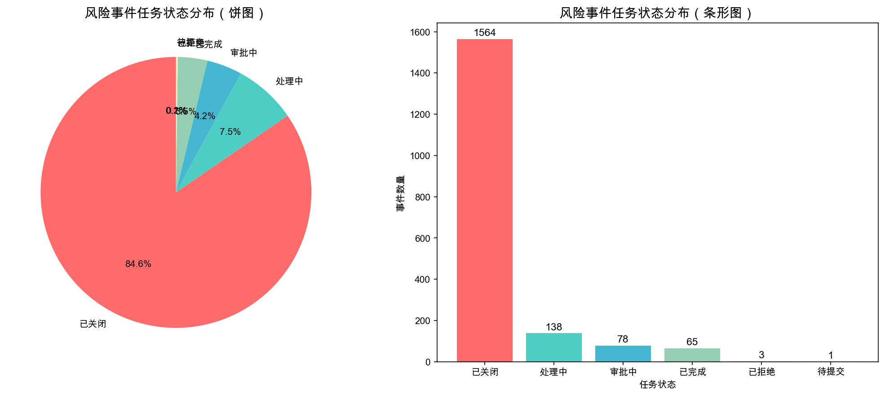
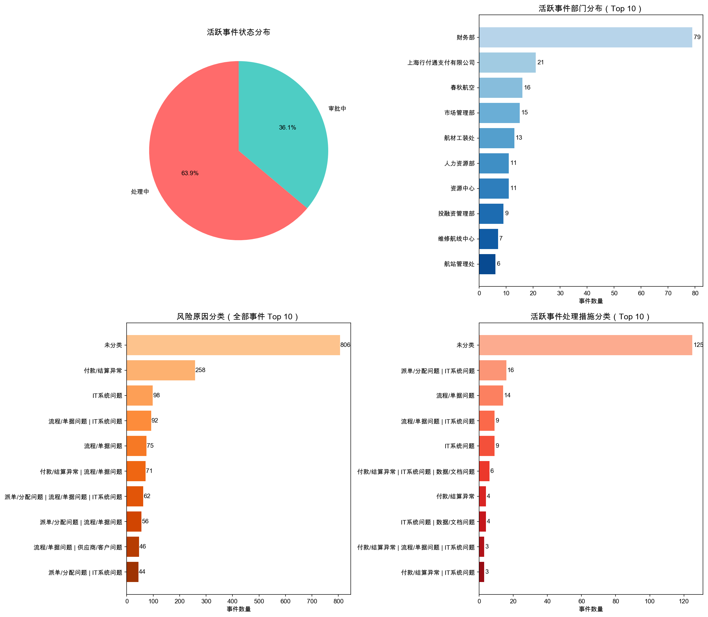

当前有 161 条活跃事件已超期，占全部活跃事件的 74.5%。其中财务部超期48条、上海行付通17条、春秋航空14条，需要重点督办处理。

| 任务状态 | 数量 | 占比 | 说明 |
|---|---|---|---|
| 已关闭 | 1,564 | 84.59% | 正常结案 |
| 处理中 | 138 | 7.46% | 处理中需跟进 |
| 审批中 | 78 | 4.22% | 等待审批 |
| 已完成 | 65 | 3.52% | 正常完成流程 |
| 已拒绝 | 3 | 0.16% | 被拒绝 |
| 待提交 | 1 | 0.05% | 待提交 |
📌 洞察：84.59%的事件通过「已关闭」流程结案，仅3.52%走完标准「已完成」流程，说明风险事件处理以快速关闭为主。活跃事件（处理中+审批中）合计216条，需要持续跟踪。

| 责任部门 | 处理中 | 审批中 | 合计 | 超期 | 风险等级 |
|---|---|---|---|---|---|
| 财务部 | 51 | 28 | 79 | 48 | 高 |
| 上海行付通支付有限公司 | 2 | 19 | 21 | 17 | 高 |
| 春秋航空 | 12 | 4 | 16 | 14 | 高 |
| 市场管理部 | 14 | 1 | 15 | 12 | 中 |
| 航材工装处 | 10 | 3 | 13 | 13 | 中 |
| 人力资源部 | 2 | 9 | 11 | 11 | 中 |
| 资源中心 | 8 | 3 | 11 | 11 | 中 |
| 投融资管理部 | 9 | 0 | 9 | 8 | 中 |
| 维修航线中心 | 7 | 0 | 7 | 0 | 低 |
| 航站管理处 | 4 | 2 | 6 | 5 | 中 |
📌 洞察：财务部以79条活跃事件（48条超期）成为风险积压最严重的部门，合计超期161条事件分布在20个部门。需要重点关注财务部、上海行付通、春秋航空三个高风险部门。
基于活跃事件的「处理措施」字段提取关键词，统计各类风险原因的出现频次：
IT系统问题是最突出的风险成因（51条），主要包括：信管架构处初始派单规则缺失、系统接口推送异常、架构处相关流程未配置等。这类问题需要信息部门从流程源头进行系统修复。
流程/单据问题次之（32条），涉及付款单据缺失、审批流程不规范等。建议完善标准操作流程（SOP）并加强单据审核。
| 排名 | 超期部门 | 超期数量 | 占超期总数 |
|---|---|---|---|
| 1 | 财务部 | 48 | 29.8% |
| 2 | 上海行付通支付有限公司 | 17 | 10.6% |
| 3 | 春秋航空 | 14 | 8.7% |
| 4 | 航材工装处 | 13 | 8.1% |
| 5 | 市场管理部 | 12 | 7.5% |
| 6 | 人力资源部 | 11 | 6.8% |
| 7 | 资源中心 | 11 | 6.8% |
| 8 | 投融资管理部 | 8 | 5.0% |